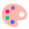

応用情報技術者試験 テクノロジ系 #7
ユーザーインタフェース
用語集まとめ ― 過去問10回分（令和3〜7年度）とシラバスの用語例から




用語集まとめ ― 過去問10回分（令和3〜7年度）とシラバスの用語例から

 出るのは「部品の名前」と「評価の手法」。見た目と結び付けて覚える
出るのは「部品の名前」と「評価の手法」。見た目と結び付けて覚える| 論点 | 押さえること | 過去問 |
|---|---|---|
| 部品の名前 | 経路＝パンくずリスト、横に流れる画像＝カルーセル、三本線＝ハンバーガーメニュー | R3春26・R6秋25・R7秋24 |
| 評価の手法 | 利用者が参加＝思考発話法・回顧法、専門家だけ＝ヒューリスティック評価・認知的ウォークスルー | R4春24・R7春22 |
| フォント | 拡大してもなめらか＝アウトライン | R3秋24・R6春24 |
| アイコン | 習得性＝一度理解した後に思い出しやすいか | R5秋24 |
| コード設計 | 26種類×k桁は26のk乗通り。増加を見込む | R4秋24 |


情報アーキテクチャ ／ サイトの構造 ／ ユーザビリティとアクセシビリティ ／ シグニファイア ／ インタフェースの種類 ／ タッチ操作
情報アーキテクチャは「分けて・並べて・名前を付けて・案内する」設計| 構造 | 形 | 向いている内容 |
|---|---|---|
| 階層型 | 大分類から小分類へ枝分かれ。深すぎると何度も押す | 商品カタログ・会社のサイト |
| 直線型 | 決まった順番に1ページずつ進む | 申込みの手順・チュートリアル |
| Webリンク型 | ページどうしが自由にリンク。迷子になりやすい | 百科事典・Wiki |
| フォークソノミー型 | 利用者が自由に付けたタグで分類（folk＋taxonomy） | 写真共有・ブックマーク |
 ユーザビリティは「その人がその場面で使いやすいか」。3つの物差しで測る
ユーザビリティは「その人がその場面で使いやすいか」。3つの物差しで測る| ユーザビリティ | アクセシビリティ | |
|---|---|---|
| 問い | その利用者に使いやすいか | 障害や年齢にかかわらず使えるか |
| 例 | 3回の操作で予約できる | 画像に代替テキスト、色だけに頼らない |
| 規格 | ISO 9241-11 | JIS X 8341・WCAG |
 「押せる」と伝える目印がシグニファイア。行為ができる関係がアフォーダンス
「押せる」と伝える目印がシグニファイア。行為ができる関係がアフォーダンス| 用語 | 中身 |
|---|---|
| アフォーダンス | 物の形が人に可能にしている行為そのもの（取っ手は引ける） |
| シグニファイア | その行為を利用者に知らせる表示や形 |
| メンタルモデル | 利用者の頭の中の「こう動くはず」 |
| フィードバック | 押したら色が変わる、処理中を表示する |
 インタフェースは操作の手段で区別。組み合わせればマルチモーダル
インタフェースは操作の手段で区別。組み合わせればマルチモーダル| インタフェース | 操作の手段 |
|---|---|
| CUI | 文字のコマンド |
| GUI | ウィンドウ・アイコン・マウス |
| NUI | 触る・話す・身ぶりなど自然な動作全般 |
| VUI | 声（スマートスピーカー） |
| ジェスチャー | 手や体の動きをカメラで読む |
| ノンバーバル | 表情・視線など言葉以外 |
| 自然言語 | ふだんの文章で指示（チャットボット） |
| 空間型 | 周りの3次元空間に情報を置く（VR・AR） |
| マルチモーダル | 複数の手段の組合せ（指さし＋声） |


選ぶ部品 ／ メニュー ／ パンくずリスト・カルーセル・ハンバーガーメニュー ／ モーダル ／ OOUIとタスク指向UI ／ フォント ／ アイコン
 選ぶ部品は「いくつ選べるか」と「全部見せるか」で使い分ける
選ぶ部品は「いくつ選べるか」と「全部見せるか」で使い分ける| 部品 | 選べる数 | 向いている場面 |
|---|---|---|
| ラジオボタン | 1つだけ | 選択肢が少なく全部見せたい |
| チェックボックス | いくつでも | 当てはまるものを全部選ぶ |
| トグルボタン | オンかオフ | 設定をその場で切り替える |
| リストボックス | 1つ又は複数 | いくつか見せたまま選ぶ |
| プルダウンメニュー | 1つだけ | 選択肢が多く画面を節約 |
| コンボボックス | 1つ | 一覧にない値も入力したい |
 OOUIは「もの→操作」、タスク指向UIは「操作→もの」の順で選ぶ
OOUIは「もの→操作」、タスク指向UIは「操作→もの」の順で選ぶ| モーダル | モードレス | |
|---|---|---|
| 開いている間 | 後ろの画面を操作できない | ほかの画面も操作できる |
| 例 | 保存の確認ダイアログ | 検索と置換のウィンドウ |
| 注意 | 多用すると作業が止まる | 今どこを操作中か分かりにくい |
| 部品 | 出るとき |
|---|---|
| ツールチップ | ポインターを重ねる（ホバー）と出る短い説明 |
| ダイアログボックス | 確認・入力のために一時的に出る小さな画面 |
 任意の倍率に拡大するならアウトラインフォント。等幅かどうかは別の話
任意の倍率に拡大するならアウトラインフォント。等幅かどうかは別の話| 選択肢の中身 | |
|---|---|
| ア | 機能を一度理解した後に、どれだけ容易に思い出せるか（正解） |
| イ | 図柄の細部を区別しやすいか |
| ウ | 以前の似たアイコンの経験から識別しやすいか |
| エ | 近くに並ぶ別のアイコンと区別しやすいか |


UXデザインの五段階モデル ／ UXハニカム構造 ／ ペルソナとカスタマージャーニーマップ ／ デザインの4原則 ／ LATCH
 デザインの4原則：近接・整列・反復・対比。情報の切り口はLATCHの5つ
デザインの4原則：近接・整列・反復・対比。情報の切り口はLATCHの5つ| LATCH | 切り口 | 飲食店サイトなら |
|---|---|---|
| L | Location 場所 | 地図で探す |
| A | Alphabet 文字の順 | 店名の五十音順 |
| T | Time 時間 | 開店日の新しい順 |
| C | Category 分類 | 料理のジャンル別 |
| H | Hierarchy 階層・量 | 評価の高い順 |


画面設計の進め方 ／ 入力の方式 ／ 入力チェック ／ チェックディジット ／ エラーの種類 ／ 帳票設計 ／ コードの種類と桁数
 画面設計は「場面→流れ→配置」の順に描く。言葉は利用者の用語で
画面設計は「場面→流れ→配置」の順に描く。言葉は利用者の用語で| 入力の方式 | 中身 |
|---|---|
| 穴埋め方式 | 決まった書式の空欄に値を埋める。項目を一覧で見渡せる |
| メニューインプット方式 | 表示された選択肢から選ぶ。初心者向き・誤り少 |
| 部分送信 | 画面全体でなく一部の項目だけ送る（郵便番号→住所） |
| オートコンプリート | 入力途中で続きの候補を出す |
入力チェックは「何と比べるか」で区別する。合計の一致はバランスチェック| チェック | 比べる相手 | 例 |
|---|---|---|
| ニューメリック | 数字かどうか | 数量に文字がない |
| フォーマット | 決まった形式・桁数 | 郵便番号 3桁-4桁 |
| リミット | 上限と下限 | 月が1〜12 |
| 組合せ | ほかの項目との組合せ | 2月30日はない |
| 照合 | マスターの登録値 | 社員番号が存在する |
| バランス | 別に求めた合計 | 明細の合計＝合計欄 |
| シーケンス | 並び順 | 伝票番号の抜け |
| チェックキャラクター | 計算した検査用の数字 | コード末尾の1桁 |
| 誤答 | どう計算した値か |
|---|---|
| 6 | 11 − 5（別の決め方と混同） |
| 7 | 重みを掛けずに足した 18 の余り |
| 8 | 重みを右から掛けた 52 の余り |
| エラー | 中身 | 見つけるチェック |
|---|---|---|
| フォーマットエラー | 形式・桁数・文字の種類が違う | フォーマット・ニューメリック |
| 論理エラー | 形式は正しいが内容が矛盾（終了日＜開始日） | 組合せ・リミット |
| シーケンスエラー | 順番が飛ぶ・逆になる | シーケンス |
| 重複エラー | 一意の値を二重に登録 | 照合 |
| 帳票設計の用語 | 中身 |
|---|---|
| 出力特性 | 時期・頻度・枚数・部数・用紙・配布先 |
| 入力特性 | 入力する人・場所・量・元の伝票の形 |
| フォームオーバーレイ | 罫線や見出しの書式をデータと重ねて同時に印刷。白紙でよい |
| プレプリント用紙 | 罫線などを前もって印刷した専用紙（事前印刷用紙） |
 コードの桁数は「文字の種類のk乗」が将来の件数を超えるまで増やす
コードの桁数は「文字の種類のk乗」が将来の件数を超えるまで増やす| コード | 作り方 | 例 |
|---|---|---|
| 順番コード | 発生順に1から連番。分類は分からない | 1, 2, 3… |
| 区分コード | 番号の範囲（ブロック）ごとに分類 | 1〜99 文房具 |
| 桁別コード | 各桁に分類の意味 | 1桁目＝大分類 |
| 表意コード | 見て意味が分かる略語や値 | TV-32 |
| 合成コード | 複数のコードを組み合わせる | 店舗＋日付＋連番 |

スタイルシート ／ レスポンシブWebデザインとメディアクエリ ／ モバイルファースト ／ プログレッシブエンハンスメント ／ クロスブラウザ
レスポンシブは1つのHTMLで幅に合わせて組み替える。切替えはメディアクエリ| 用語 | 中身 |
|---|---|
| スタイルシート（CSS） | 見た目を内容（HTML）と分けて定義。1か所直せば全体が変わる |
| レスポンシブWebデザイン | 画面の幅に合わせてレイアウトが自動で変わるように作る |
| メディアクエリ | 幅などの条件でCSSを切り替えるしくみ |
| モバイルファースト | 狭い画面から先に設計し、パソコン向けに広げる |
| クロスブラウザ | どのブラウザでも同じように表示・動作させる |


JIS Z 8530 のプロセス ／ ユニバーサルデザインの7原則 ／ JIS X 8341・WCAG ／ ユーザビリティ評価の手法 ／ NEM ／ A/Bテスト
 人間中心設計は4つの活動を、利用者の評価を入れて繰り返す
人間中心設計は4つの活動を、利用者の評価を入れて繰り返す| 活動 | やること |
|---|---|
| 利用状況の理解及び明示 | 誰が・何のために・どんな環境で使うかを調べる |
| ユーザ要求事項の明示 | 利用者が何を達成できなければならないかを書く |
| 設計解の作成 | 要求を満たす設計案・プロトタイプを作る |
| 設計の評価 | 利用者の視点で評価し、足りなければ前に戻る |
 NEMは「初心者÷熟練者」の比が大きい手順が問題。差や長さで選ばない
NEMは「初心者÷熟練者」の比が大きい手順が問題。差や長さで選ばない| 誤答 | 選んだ理由 |
|---|---|
| 手順1 | 時間の差（35秒）が最大。NEMは比で見る |
| 手順3 | 初心者の時間が最長。熟練者も長く、比は1.6 |
| 手順4 | 比2.5で、最大ではない |
 まとめ：名前は見た目で、手法は「誰が何をするか」で区別する
まとめ：名前は見た目で、手法は「誰が何をするか」で区別する| 論点 | 覚えること | 過去問 |
|---|---|---|
| 案内の部品 | 経路＝パンくずリスト、横に流れる画像＝カルーセル、三本線＝ハンバーガー | R3春26・R6秋25・R7秋24 |
| 評価の手法 | 利用者参加＝思考発話法・回顧法。専門家だけ＝ヒューリスティック・認知的ウォークスルー | R4春24・R7春22 |
| フォント・アイコン | 拡大してもなめらか＝アウトライン。習得性＝理解後に思い出しやすい | R3秋24・R6春24・R5秋24 |
| コード設計 | 文字の種類のk乗 ≧ 将来の件数。桁別＝各桁に意味、区分＝範囲で分類 | R4秋24 |
| 情報の整理 | フォークソノミー＝利用者のタグ。シグニファイア＝操作の手がかり | シラバス |
| UX | 戦略→要件→構造→骨格（ワイヤーフレーム）→表層。近接・整列・反復・対比。LATCH | シラバス |
| 入力チェック | 合計の一致＝バランス、マスターとの一致＝照合、組合せ＝論理エラー | シラバス |
| 人間中心設計・UD | 利用状況→要求→設計解→評価。Undo＝失敗に対する寛大さ。JIS X 8341-3＝WCAG | シラバス |